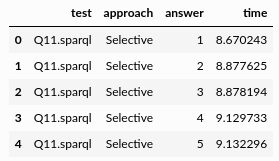
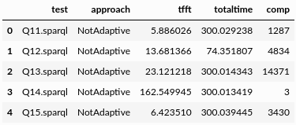
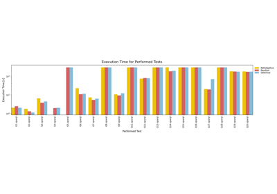
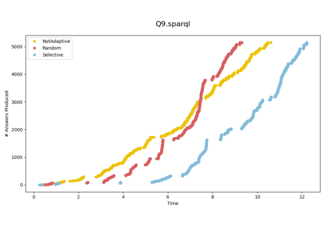
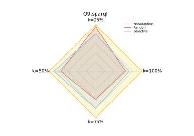

4. Examples
Below are some example use-cases for the diefpy library. They show how to use diefpy. Before jumping into the examples, the data preparation is explained.
Data Preparation
To compute the diefficiency metrics dief@t and dief@k, we need the answer trace produces by the SPARQL query engines when executing queries.
Answer traces record the exact point in time when an engine produces an answer during query execution.
For this tutorial, we executed SPARQL queries using three different configurations of the
nLDE engine: Selective, NotAdaptive, Random.
The resulting answer trace for each query execution is stored in a CSV file available at FigShare (137.06 MB). The structure of the CSV file is as follows:
test: id of the query executed. Example: ‘Q9.sparql’
approach: name of the approach (or engine) used to execute the query.
answer: the value i indicates that this row corresponds to the ith answer produced by approach when executing query.
time: elapsed time (in seconds) since approach started the execution of query until the answer i is produced.
import diefpy
# Load the answer trace file with the query traces from FigShare.
traces = diefpy.load_trace("https://ndownloader.figshare.com/files/9625852")

Fig. 1: Example of Traces Data.
In addition, in this tutorial we are going to compare the performance of the nLDE engine using the metrics dief@t and dief@k as well as conventional metrics used in the query processing literature, such as: execution time, time for the first tuple, and number of answers produced.
For this tutorial, we measured the performance of the nLDE engine using conventional metrics. The results are available at another CSV file in FigShare (2.86 KB). The structure of this CSV file is as follows:
test: id of the query executed. Example: ‘Q9.sparql’
approach: name of the approach (or engine) used to execute the query.
tfft: time (in seconds) required by approach to produce the first tuple when executing query.
totaltime: elapsed time (in seconds) since approach started the execution of query until the last answer of query is produced.
comp: number of answers produced by approach when executing query.
# Load the result of the other metrics (execution time, etc.) from FigShare.
metrics = diefpy.load_metrics("https://ndownloader.figshare.com/files/9660316")

Fig. 2: Example of Metrics Data.
Examples

Visualizing Execution Time of SPARQL Query Engines

Visualizing Answer Traces of Continuous SPARQL Query Engines

Measuring dief@t at Different Answer Completeness Percentages